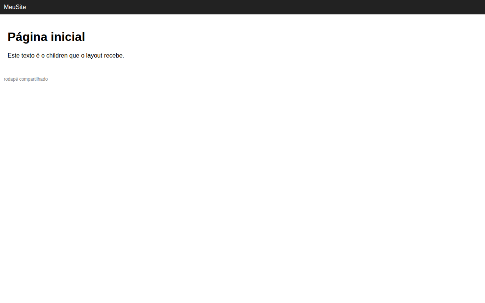

Layout raiz (app/layout.jsx)
Toda página da Ana precisa de <html> e <body> — e repetir isso em cada arquivo seria um pesadelo. O app/layout.jsx resolve isso: é o único arquivo obrigatório da pasta app/, e ele envolve todas as páginas do site. Nesta página você vai editar o layout, definir o título da aba e importar o CSS global.
- Por que o
app/layout.jsxé obrigatório e único na raiz deapp/ - Como ele define
<html>,<body>e recebe{children} - Como exportar
metadata(title, description) — o título da aba do navegador - Onde importar o CSS global (
globals.css) - Que o layout persiste entre navegações (não recarrega)
A ideia: o layout é a moldura e a fundação da casa
Imagine que a Ana vai pendurar quadros numa parede. Cada quadro (cada página) é diferente — um é uma foto da praia, outro é um pôster de banda — mas a parede, o rodapé, a tomada e a moldura externa são sempre as mesmas. Ninguém constrói uma parede nova para cada quadro. O layout.jsx é exatamente essa parede: ele diz "todo quadro deste site fica dentro de um <html> com <body> assim", e o lugar onde o quadro entra chama-se {children} — literalmente "os filhos": o Next.js encaixa a página atual bem naquele buraco.
Isso tem uma consequência poderosa: quando o usuário navega de / para /sobre, o layout não é recarregado — só o children troca. É por isso que menus e barras superiores não piscam na navegação. Se cada página tivesse o próprio <html>, a página inteira recarregaria a cada clique (o comportamento antigo de sites em PHP, por exemplo).
Além da estrutura, o layout também cuida da metadata: o título que aparece na aba do navegador, a descrição para o Google, o ícone. No App Router isso é declarativo: basta exportar um objeto metadata no mesmo arquivo — sem biblioteca externa. E é no layout que importamos o CSS global (globals.css), porque CSS global só pode ser importado no layout raiz (você vai ver o erro disso no capítulo de estilos).
Ana constrói a casa com as paredes mestras primeiro
Antes de decorar qualquer cômodo, a Ana levanta as paredes mestras da casa — e todos os cômodos usam essas paredes. O app/layout.jsx é a parede mestra do site: ele define o <html>, o <body>, o menu e o rodapé uma única vez, e todas as páginas entram no meio pelo {children} — como um cômodo que já nasce dentro da casa, herdando a estrutura.
E dá para ter paredes mestras internas: um layout.jsx dentro de app/blog/ envolve só as páginas do blog com a sidebar do blog. A regra da Ana: o que é igual em tudo vai no layout raiz; o que é específico de uma área vai no layout da pasta — assim nenhuma página repete código de menu e rodapé.
O layout padrão do create-next-app, simplificado
import "./globals.css"; // CSS global do site inteiro
export const metadata = {
title: "Meu App da Ana",
description: "Um site feito com Next.js",
};
export default function RootLayout({ children }) {
return (
<html lang="pt-BR">
<body>
{children}
</body>
</html>
);
}
Repare nos três blocos: (1) o import do CSS global no topo; (2) o export const metadata — troque o title e olhe a aba do navegador mudar; (3) o componente padrão que recebe { children } e o coloca dentro do <body>. Sem <html> e <body> aqui, o Next.js dá erro — é a fundação da casa.

layout.jsx e aparece em todas as páginas — é o {children} que troca no meio.Layouts aninhados
O App Router permite layouts aninhados: além do app/layout.jsx (raiz, obrigatório), a Ana pode criar app/blog/layout.jsx, que envolve só as páginas de app/blog/... — útil para uma seção inteira com sidebar própria. O layout mais próximo da página envolve por dentro. Mas no Nível 1 vamos ficar só no raiz.
app/
├── layout.jsx ← raiz: html + body (obrigatório)
├── page.jsx ← rota /
└── blog/
├── layout.jsx ← layout só do blog (opcional, aninhado)
└── page.jsx ← rota /blog
| Parte do layout | O que faz |
|---|---|
import "./globals.css" | Importa o CSS global (só pode aqui no raiz) |
export const metadata | Título da aba, descrição, ícone… (SEO) |
<html lang="pt-BR"> | Elemento raiz obrigatório; lang ajuda acessibilidade e SEO |
<body>{children}</body> | O {children} é onde a página atual entra |
export default function RootLayout | Nome só por convenção; precisa ser export default |
Missão: o <header> do Layout ainda diz “MeuSite”. Troque o texto dele para Site da Ana — repare que o {children} continua no lugar. Rode ▶ e ✔.
function Layout({ children }) {
return (
<div style={{ fontFamily: "sans-serif" }}>
<header style={{ background: "#222", color: "#fff", padding: 10 }}>MeuSite</header>
<main style={{ padding: 20 }}>{children}</main>
<footer style={{ color: "#888", fontSize: 12, padding: 10 }}>rodapé compartilhado</footer>
</div>
);
}
function App() {
return (
<Layout>
<h1>Página inicial</h1>
<p>Este texto é o children que o layout recebe.</p>
</Layout>
);
}
function Layout({ children }) {
return (
<div style={{ fontFamily: "sans-serif" }}>
<header style={{ background: "#222", color: "#fff", padding: 10 }}>Site da Ana</header>
<main style={{ padding: 20 }}>{children}</main>
<footer style={{ color: "#888", fontSize: 12, padding: 10 }}>rodapé compartilhado</footer>
</div>
);
}
function App() {
return (
<Layout>
<h1>Página inicial</h1>
<p>Este texto é o children que o layout recebe.</p>
</Layout>
);
}
Quando dá errado
<html>/<body> do layout e o Next.js reclamou no build:Error: Missing "<html>" and "<body>" tags in the root layout.
The root layout must define the <html> and <body> tags.
Dica do guia: o app/layout.jsx raiz OBRIGA ter <html> e <body>.
Se apagou sem querer, restaure:
return (<html lang="pt-BR"><body>{children}</body></html>);
metadata dentro de um componente com "use client":Error: You are attempting to export "metadata" from a component marked with "use client", which is disallowed. Dica do guia: metadata só pode ser exportada em Server Components (arquivos sem "use client") — no layout raiz não tem erro.
Exercícios
1. Qual arquivo é o layout raiz obrigatório do App Router?
2. Onde a página atual entra dentro do layout?
Exercício 1
Como se chama o export especial do layout que define o título da aba do navegador? (dica: export const _____ = { title: "..." })